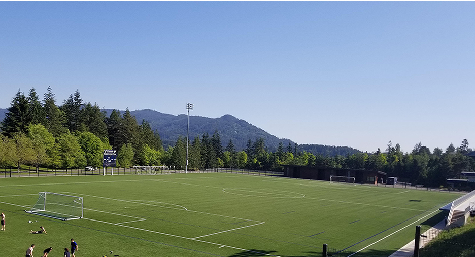

WWU Soccer Field


Photo description/credits.
This field was named after Robert and Scott Harrington. Scott is a WWU Alumn who donated $1 million as a gift to go towards the creation of this soccer field. The field was dedicated for use in September of 2014.